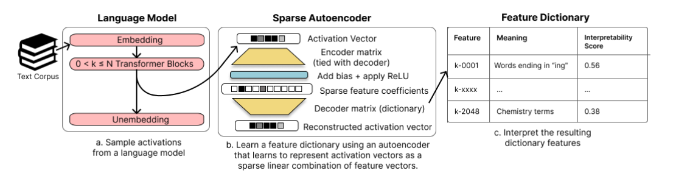

Sample, train, interpret: the SAE pipeline

Three stages: sample, train, interpret
The diagram lays out the paper's method as a left-to-right pipeline. In stage (a), a language model runs over a text corpus, and its internal activations are tapped after some number of transformer blocks (labeled "0 < k ≤ N Transformer Blocks") — a chosen intermediate depth, not the model's final output — producing a stream of activation vectors. In stage (b), those vectors feed a sparse autoencoder: an encoder matrix (tied to the decoder) maps the activation vector to a hidden layer, a learned bias is added and a ReLU applied, and the result is a vector of sparse feature coefficients; a decoder matrix — the feature dictionary itself — maps these coefficients back to a reconstructed activation vector. Formally, $c=\mathrm{ReLU}(Mx+b)$ and $\hat{x}=M^Tc$, trained to minimize $$L(x) = \|x-\hat{x}\|_2^2 + \alpha\|c\|_1$$ In stage (c), each row of the dictionary matrix becomes an addressable feature, assigned a plain-language meaning and an interpretability score, populating a table like the one shown (sparse-autoencoders, §"1 INTRODUCTION", p. 2; §"2 TAKING FEATURES OUT OF SUPERPOSITION WITH SPARSE DICTIONARY LEARNING", p. 3).
Why the pipeline is built this way
The autoencoder is trained entirely after the fact, on cached, frozen activations from an already-trained model, rather than by changing the model's own architecture or training objective. This keeps the method unsupervised and cheap, and decouples interpretability work from the difficulty of training a state-of-the-art model under added constraints. The encoder and decoder matrices are tied (the decoder is the encoder's transpose) because this halves the parameter count, and because it encodes the assumption that the direction which detects a feature and the direction that defines its effect on the reconstruction should coincide, removing an otherwise-ambiguous choice between encoder and decoder directions (sparse-autoencoders, §"2 TAKING FEATURES OUT OF SUPERPOSITION WITH SPARSE DICTIONARY LEARNING", p. 2).
What the pipeline sets up
This three-stage flow is the scaffolding for every later result in the paper: the dictionary produced in stage (b) supplies the Dictionary feature units whose interpretability is scored in stage (c) and benchmarked against baselines, whose causal precision is tested with Activation patching, and whose Monosemanticity is examined in case studies. It operationalizes the idea that Polysemanticity arises from Superposition and can be undone by Sparse dictionary learning / sparse coding, building on Sharkey et al. (2023) interim research report and applied here to Pythia (model suite) residual streams, in service of the broader Mechanistic interpretability agenda.